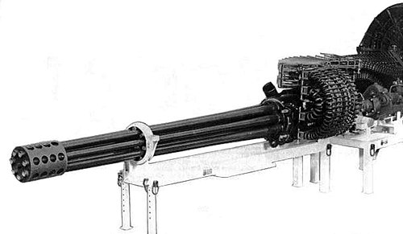
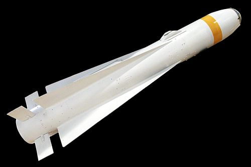

A-10 Thunderbolt II
The Fairchild Republic A-10 Thunderbolt II, also widely known by the nickname Warthog, is a single-seat, twin-turbofan, straight-wing, subsonic attack aircraft developed by Fairchild Republic for the United States Air Force (USAF). In service since 1977, it is named after the Republic P-47 Thunderbolt strike-fighter of World War II, but is instead commonly referred to as the "Warthog" (sometimes simply "Hog").[3] The A-10 was designed to provide close air support (CAS) to ground troops by attacking enemy armored vehicles, tanks, and other ground forces; it is the only production-built aircraft designed solely for CAS to have served with the U.S. Air Force.[4] Its secondary mission is to direct other aircraft in attacks on ground targets, a role called forward air controller (FAC)-airborne; aircraft used primarily in this role are designated OA-10.The A-10 has a cantilever low-wing monoplane wing with a wide chord.[34] It has superior maneuverability at low speeds and altitude due to its large wing area, high wing aspect ratio, and large ailerons. The wing also allows short takeoffs and landings, permitting operations from austere forward airfields near front lines. The A-10 can loiter for extended periods and operate under 1,000-foot (300 m) ceilings with 1.5-mile (2.4 km) visibility. It typically flies at a relatively low speed of 300 knots (350 mph; 560 km/h), which makes it a better platform for the ground-attack role than fast fighter-bombers, which often have difficulty targeting small, slow-moving targets.
Air To Ground Capabilities
---> GAU-8 Avenger

-->The General Electric GAU-8/A Avenger is a 30 mm hydraulically driven seven-barrel Gatling-style autocannon that is primarily, and most famously mounted in the United States Air Force's Fairchild Republic A-10 Thunderbolt II. Designed to destroy a wide variety of ground targets, the Avenger delivers 30mm rounds at a high rate of fire. The GAU-8/A is also used in the Dutch Goalkeeper CIWS ship weapon system, which provides defense against short-range threats such as highly maneuverable missiles, aircraft, and fast-maneuvering surface vessels. The GAU-8/A was designed by General Electric but has been produced by General Dynamics since 1997.
The GAU-8 itself weighs 620 lb (280 kg), but the complete weapon, with feed system and drum, weighs 4,029 lb (1,828 kg) with a maximum ammunition load. It measures 19 ft 5+1⁄2 in (5.931 m) from the muzzle to the rearmost point of the ammunition system, and the ammunition drum alone is 34.5 in (88 cm) in diameter and 71.5 in (1.82 m) long.[8] Power for operating the gun is provided by twin hydraulic motors pressurized from two independent hydraulic systems. The magazine can hold 1,174 rounds, although 1,150 rounds are the typical load-out. Muzzle velocity when firing armor-piercing incendiary rounds is 1,013 m/s, almost the same as the substantially lighter M61 Vulcan's 20 mm round, giving the gun a muzzle energy of just over 200 kilojoules.[9] 30×173mm round next to a .30-06 Springfield for comparison The standard ammunition mixture for antiarmor use is a five-to-one mix of PGU-14/B armor-piercing incendiary, with a projectile weight around 14.0 oz (395 g or 6,096 gr) and PGU-13/B high-explosive incendiary] rounds, with a projectile weight around 13.3 oz (378 g or 5,833 gr).[10] The PGU-14/B's projectile incorporates a lightweight aluminum body, cast around a smaller caliber depleted uranium penetrating core.[11] In 1979, the Avenger was tested against M47 Patton tanks and caused "severe damage".[12]
-->AGM-65 Maverick

The AGM-65 Maverick is an air-to-ground missile (AGM) designed for close air support. It is the most widely produced precision-guided missile in the Western world,[4] and is effective against a wide range of tactical targets, including armor, air defenses, ships, ground transportation and fuel storage facilities.The Maverick has a modular design, allowing for different combinations of the guidance package and warhead to be attached to the rocket motor to produce a different weapon.[1] It has long-chord delta wings and a cylindrical body, reminiscent of the AIM-4 Falcon and the AIM-54 Phoenix.[3] Different models of the AGM-65 have used electro-optical, laser, and imaging infrared guidance systems. The AGM-65 has two types of warhead: one has a contact fuze in the nose, the other has a heavyweight warhead fitted with a delayed-action fuze, which penetrates the target with its kinetic energy before detonating. The latter is most effective against large, hard targets. The propulsion system for both types is a solid-fuel rocket motor behind the warhead.[1] The Maverick missile is unable to lock onto targets on its own; it has to be given input by the pilot or weapon systems officer after which it follows the path to the target autonomously. In most modern aircraft with MFDs, an A-10 Thunderbolt II for example, the video feed from the seeker head is relayed to a screen in the cockpit, where the pilot can check the locked target of the missile before launch. A crosshair on the heads-up display is shifted by the pilot to set the approximate target, where the missile will then automatically recognize and lock on to the target. Once the missile is launched, it requires no further assistance from the launch vehicle and tracks its target automatically. This fire-and-forget property is not shared by the E version that uses semi-active laser homing.